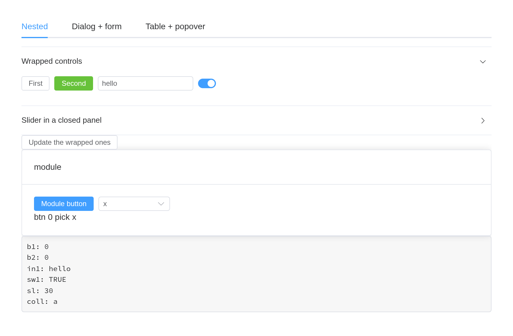
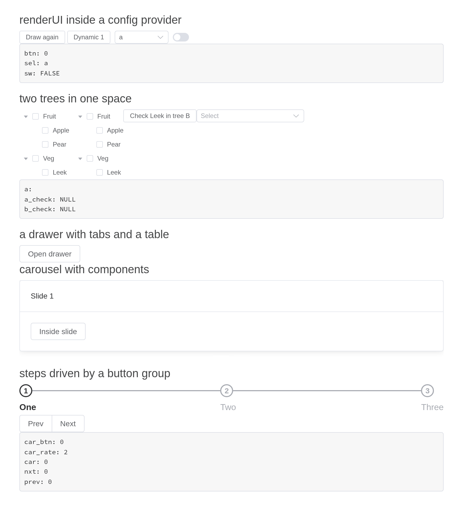
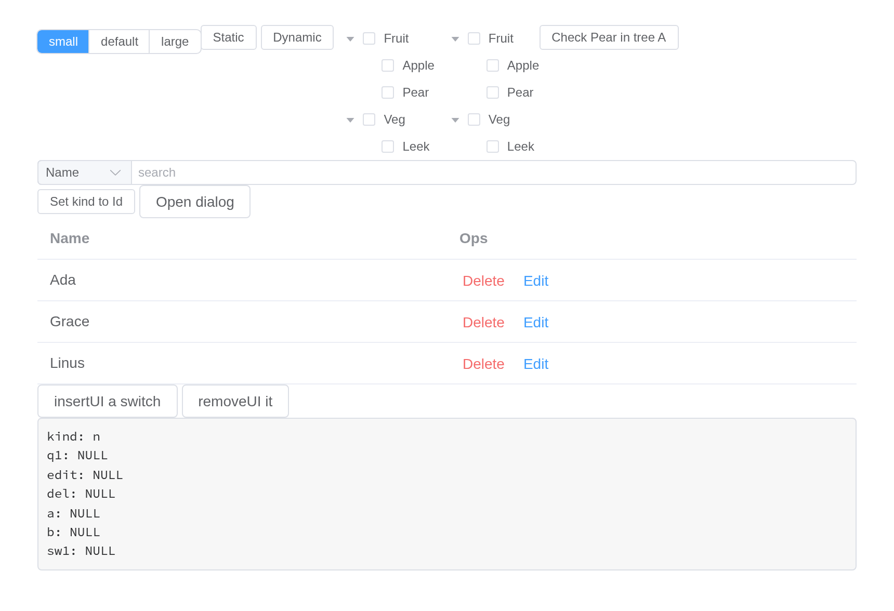
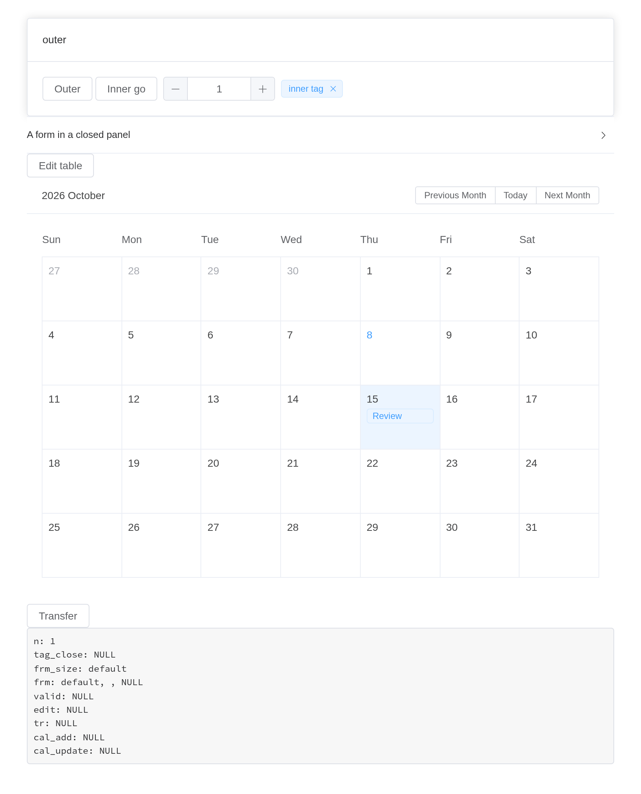
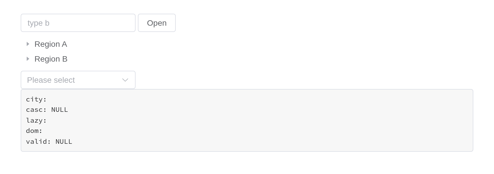
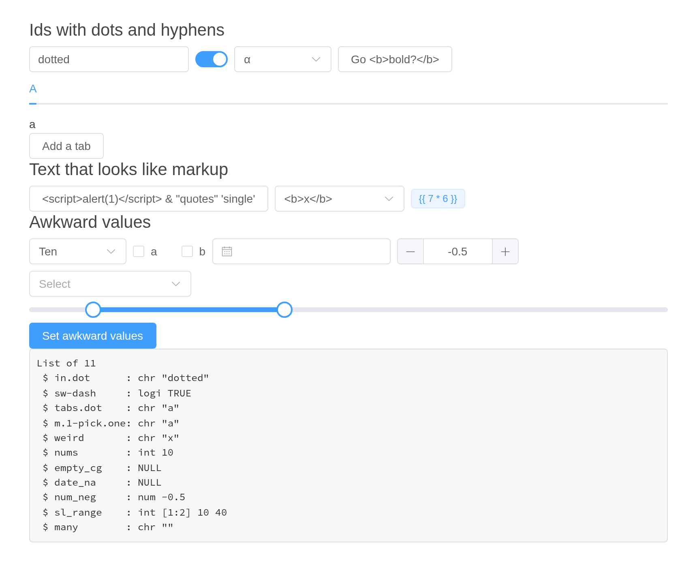
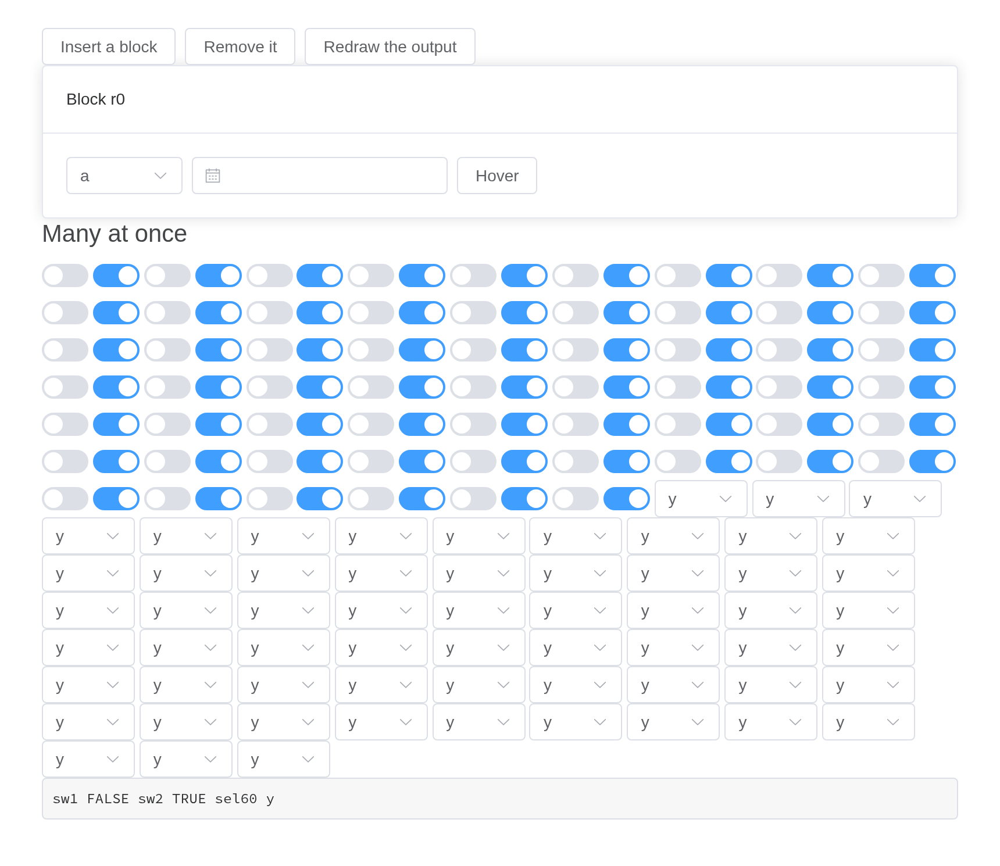

Each component page shows one component at a time. An app puts them together: controls inside a space inside a tab, a form inside a dialog, a table inside a drawer, all of it inside a config provider, some of it drawn later by the server. Most of what can go wrong only goes wrong then, so these apps put the components together on purpose.
Each is a file under examples/combinations/ in the
installed package, run as it stands –
shiny::runApp(system.file("examples/combinations/drawn-later", package = "shiny.element")).
In the package’s sources, tools/combinations.R drives each
one in a browser, step by step, and checks what every step should
do.
Folded in, and nested
A component given to another – a button to a tooltip, controls to a
space, a select to an input’s slot – becomes part of its Vue instance.
It keeps its id all the same: it reports input$<id>,
update_el_*() and call_el() reach it by that
id, and in the page the id is where Element puts it – a button’s
<button>, a select’s or an input’s
<input>, as Shiny’s own inputs have it – for CSS or
shinyjs. Here controls sit in a space in a collapse in a
tab, inside a config provider, beside a module whose button is wrapped
in a tooltip; a dialog holds a form, and a popover filters a table
output.
A select in a space, or anywhere else that is only as wide as its
content, wants a width – el_select(width = "160px"), as
Element’s demos give theirs. It has none of its own there, and shrinks
to its arrow, the chosen label hidden; Element’s own
<el-select> does the same.
A select inside a popover wants teleported = FALSE.
Otherwise its options are drawn outside the popover, and choosing one
closes the popover – as in Element itself.
# Controls folded into a space, a collapse and a tooltip, inside tabs
# inside a config provider; a module; a form in a dialog that is destroyed
# on close; a popover filtering a table output.
#
# shiny::runApp(system.file("examples/combinations/wrapped-and-nested", package = "shiny.element"))
#
# tools/combinations.R drives it in a browser and checks each step
# (tools/combinations/wrapped-and-nested.R).
library(shiny)
library(shiny.element)
# what the server holds, one input per line
inputs_text <- function(x) {
paste(
sprintf(
"%s: %s",
names(x),
vapply(
x,
function(v) {
if (is.null(v)) "NULL" else paste(format(unclass(v)), collapse = ", ")
},
character(1)
)
),
collapse = "\n"
)
}
people <- data.frame(
name = c("Ada", "Grace", "Linus", "Margaret"),
team = c("core", "ui", "core", "docs"),
age = c(36, 45, 28, 51)
)
# a module, wrapped twice over, updated through its own session
mod_ui <- function(id) {
ns <- NS(id)
el_card(
header = "module",
el_space(
el_tooltip(
ns("tip"),
el_button(ns("btn"), "Module button", type = "primary"),
content = "inside a tooltip, inside a space"
),
el_select(
ns("pick"),
choices = c("x", "y", "z"),
selected = "x",
width = "120px"
)
),
textOutput(ns("said"))
)
}
mod_server <- function(id) {
moduleServer(id, function(input, output, session) {
output$said <- renderText(paste(
"btn",
input$btn %||% 0,
"pick",
input$pick %||% ""
))
observeEvent(input$btn, {
update_el_button(session, "btn", label = paste("Clicked", input$btn))
update_el_select(session, "pick", selected = "z")
})
})
}
ui <- el_page(
el_config_provider(
id = "cfg",
size = "small",
el_tabs(
"tabs",
tabs = list(
list(
name = "one",
label = "Nested",
content = tagList(
el_collapse(
"coll",
value = "a",
items = list(
list(
name = "a",
title = "Wrapped controls",
content = el_space(
id = "space1",
el_button("b1", "First"),
el_button("b2", "Second", type = "success"),
el_input("in1", value = "hello", width = "160px"),
el_switch("sw1", value = TRUE)
)
),
list(
name = "b",
title = "Slider in a closed panel",
content = el_slider("sl_hidden", value = 30)
)
)
),
el_button("upd_wrapped", "Update the wrapped ones"),
mod_ui("m1"),
verbatimTextOutput("dump1")
)
),
list(
name = "two",
label = "Dialog + form",
content = tagList(
el_button("open_dlg", "Open dialog", type = "primary"),
el_dialog(
"dlg",
title = "Edit",
destroy_on_close = TRUE,
content = el_form(
id = "frm",
label_width = "100px",
el_form_field(
"who",
"select",
label = "Who",
choices = people$name,
rules = el_rule(
required = TRUE,
message = "Pick someone",
trigger = "change"
)
),
el_form_item(
"When",
el_form_field("d", "date-picker", style = "width: 100%"),
"-",
el_form_field("t", "time-picker", style = "width: 100%")
),
el_form_field("note", "textarea", label = "Note")
)
),
verbatimTextOutput("dump2")
)
),
list(
name = "three",
label = "Table + popover",
content = tagList(
el_popover(
"pop",
reference = el_button("pop_btn", "Filter"),
trigger = "click",
popover_width = 260,
body = tagList(
el_select(
"team",
choices = c("all", unique(people$team)),
selected = "all",
teleported = FALSE
),
el_slider("min_age", value = 0, max = 60)
)
),
el_table_output("tbl"),
el_pagination(
"pg",
total = 4,
page_size = 2,
layout = "prev, pager, next"
),
verbatimTextOutput("dump3")
)
)
)
)
)
)
server <- function(input, output, session) {
mod_server("m1")
output$dump1 <- renderText(inputs_text(list(
b1 = input$b1,
b2 = input$b2,
in1 = input$in1,
sw1 = input$sw1,
sl = input$sl_hidden,
coll = input$coll
)))
observeEvent(input$upd_wrapped, {
update_el_button(session, "b2", label = "Second (updated)", type = "danger")
update_el_input(session, "in1", value = "changed")
update_el_switch(session, "sw1", value = FALSE)
update_el_slider(session, "sl_hidden", value = 77)
})
observeEvent(input$open_dlg, update_el_dialog(session, "dlg", visible = TRUE))
output$dump2 <- renderText(inputs_text(list(
frm = input$frm,
valid = input$frm_valid,
submit = input$frm_submit,
dlg = input$dlg
)))
shown <- reactive({
d <- people
if (!is.null(input$team) && input$team != "all") {
d <- d[d$team == input$team, ]
}
d <- d[d$age >= (input$min_age %||% 0), ]
d
})
output$tbl <- render_el_table({
d <- shown()
page <- input$pg %||% 1
rows <- d[seq_len(nrow(d)) %in% ((page - 1) * 2 + 1:2), , drop = FALSE]
el_table(data = rows, selection = TRUE)
})
observe(update_el_pagination(session, "pg", total = nrow(shown())))
output$dump3 <- renderText(inputs_text(list(
team = input$team,
min_age = input$min_age,
pg = input$pg,
rows = input$tbl_selection_rows,
pop = input$pop
)))
}
shinyApp(ui, server)
Drawn later
renderUI() inside a config provider draws components
after it: they take its settings all the same, and follow them when
update_el_config_provider() changes them. Two trees in one
space each keep their own methods, a drawer holds tabs with a table and
a calendar output drawn while it was closed, and steps follow a button
group.
# Components drawn by renderUI() inside a config provider; two trees in
# one space, each reached by its own call_el(); a drawer holding tabs with a
# table and a calendar output; components in a carousel; steps driven by a
# button group.
#
# shiny::runApp(system.file("examples/combinations/drawn-later", package = "shiny.element"))
#
# tools/combinations.R drives it in a browser and checks each step
# (tools/combinations/drawn-later.R).
library(shiny)
library(shiny.element)
# what the server holds, one input per line
inputs_text <- function(x) {
paste(
sprintf(
"%s: %s",
names(x),
vapply(
x,
function(v) {
if (is.null(v)) "NULL" else paste(format(unclass(v)), collapse = ", ")
},
character(1)
)
),
collapse = "\n"
)
}
tree_data <- list(
list(
id = 1,
label = "Fruit",
children = list(
list(id = 11, label = "Apple"),
list(id = 12, label = "Pear")
)
),
list(id = 2, label = "Veg", children = list(list(id = 21, label = "Leek")))
)
ui <- el_page(
el_config_provider(
id = "cfg",
size = "small",
tags$h4("renderUI inside a config provider"),
el_button("regen", "Draw again"),
uiOutput("dyn"),
verbatimTextOutput("dump_dyn"),
tags$h4("two trees in one space"),
el_space(
id = "trees",
el_tree(
"tree_a",
data = tree_data,
node_key = "id",
show_checkbox = TRUE,
default_expand_all = TRUE
),
el_tree(
"tree_b",
data = tree_data,
node_key = "id",
show_checkbox = TRUE,
default_expand_all = TRUE
)
),
el_button("check_b", "Check Leek in tree B"),
el_tree_select(
"tsel",
data = list(),
props = list(value = "id", label = "label", children = "children"),
width = "200px"
),
verbatimTextOutput("dump_tree")
),
tags$h4("a drawer with tabs and a table"),
el_button("open_drawer", "Open drawer"),
el_drawer(
"drw",
title = "Details",
size = "60%",
content = el_tabs(
"dtabs",
tabs = list(
list(name = "t", label = "Table", content = el_table_output("dtbl")),
list(
name = "c",
label = "Calendar",
content = el_calendar_output("dcal")
)
)
)
),
tags$h4("carousel with components"),
el_carousel(
"car",
height = "160px",
autoplay = FALSE,
items = list(
el_carousel_item(
name = "s1",
el_card(header = "Slide 1", el_button("car_btn", "Inside slide"))
),
el_carousel_item(
name = "s2",
el_card(header = "Slide 2", el_rate("car_rate", value = 2))
)
)
),
tags$h4("steps driven by a button group"),
el_steps(
"stp",
active = 0,
steps = list(el_step("One"), el_step("Two"), el_step("Three"))
),
el_button_group(el_button("prev", "Prev"), el_button("nxt", "Next")),
verbatimTextOutput("dump_misc")
)
server <- function(input, output, session) {
n <- reactiveVal(1)
observeEvent(input$regen, n(n() + 1))
output$dyn <- renderUI({
el_space(
id = "dyn_space",
el_button("dyn_btn", paste("Dynamic", n())),
el_select(
"dyn_sel",
choices = c("a", "b", "c"),
selected = "a",
width = "100px"
),
el_switch("dyn_sw", value = n() %% 2 == 0)
)
})
output$dump_dyn <- renderText(inputs_text(list(
btn = input$dyn_btn,
sel = input$dyn_sel,
sw = input$dyn_sw
)))
observeEvent(
input$dyn_btn,
update_el_select(session, "dyn_sel", selected = "c")
)
observeEvent(
input$check_b,
call_el(session, "tree_b", "setChecked", list(21, TRUE, FALSE))
)
observe({
ticked <- input$tree_a_checked
keys <- unlist(input$tree_a_checked)
update_el_tree_select(session, "tsel", data = tree_data)
}) |>
bindEvent(input$tree_a_checked, ignoreInit = TRUE)
output$dump_tree <- renderText(inputs_text(list(
a = input$tree_a,
a_check = input$tree_a_checked,
b_check = input$tree_b_checked
)))
observeEvent(
input$open_drawer,
update_el_drawer(session, "drw", visible = TRUE)
)
output$dtbl <- render_el_table(el_table(
data = mtcars[1:5, 1:6],
selection = TRUE
))
output$dcal <- render_el_calendar(el_calendar(
events = data.frame(date = Sys.Date(), title = "Today's event")
))
active <- reactiveVal(0)
observeEvent(input$nxt, {
active(min(3, active() + 1))
update_el_steps(session, "stp", active = active())
})
observeEvent(input$prev, {
active(max(0, active() - 1))
update_el_steps(session, "stp", active = active())
})
output$dump_misc <- renderText(inputs_text(list(
car_btn = input$car_btn,
car_rate = input$car_rate,
car = input$car,
nxt = input$nxt,
prev = input$prev
)))
}
shinyApp(ui, server)
Overlays, and buttons in table cells
A dialog holds tabs and opens a second dialog over it; a message box
opens over both. Tabs drawn in a closed dialog measure themselves once
shown. A table’s cells hold a popconfirm and a button, whose
rowAction() reports the row; insertUI() adds a
component and removeUI() takes it away.
# A config provider resized from the server; a select in an input's
# slot; tabs, a nested dialog and a message box over a dialog; a popconfirm
# in a table cell; components added and removed with insertUI().
#
# shiny::runApp(system.file("examples/combinations/overlays-and-cells", package = "shiny.element"))
#
# tools/combinations.R drives it in a browser and checks each step
# (tools/combinations/overlays-and-cells.R).
library(shiny)
library(shiny.element)
# what the server holds, one input per line
inputs_text <- function(x) {
paste(
sprintf(
"%s: %s",
names(x),
vapply(
x,
function(v) {
if (is.null(v)) "NULL" else paste(format(unclass(v)), collapse = ", ")
},
character(1)
)
),
collapse = "\n"
)
}
tree_data <- list(
list(
id = 1,
label = "Fruit",
children = list(
list(id = 11, label = "Apple"),
list(id = 12, label = "Pear")
)
),
list(id = 2, label = "Veg", children = list(list(id = 21, label = "Leek")))
)
rows <- data.frame(id = 1:3, name = c("Ada", "Grace", "Linus"))
ui <- el_page(
el_config_provider(
id = "cfg",
size = "small",
el_radio_group(
"size_pick",
choices = c("small", "default", "large"),
selected = "small",
button = TRUE
),
el_button("static_btn", "Static"),
uiOutput("dyn"),
el_space(
id = "trees",
el_tree(
"tree_a",
data = tree_data,
node_key = "id",
show_checkbox = TRUE,
default_expand_all = TRUE
),
el_tree(
"tree_b",
data = tree_data,
node_key = "id",
show_checkbox = TRUE,
default_expand_all = TRUE
)
),
el_button("check_a", "Check Pear in tree A"),
el_input(
"q",
placeholder = "search",
slots = list(
prepend = el_select(
"kind",
choices = c(Name = "n", Id = "i"),
selected = "n",
width = "90px"
)
)
),
el_button("set_kind", "Set kind to Id")
),
el_button("open_dlg", "Open dialog"),
el_dialog(
"dlg",
title = "Outer",
width = "600px",
content = tagList(
el_tabs(
"dlg_tabs",
tabs = list(
list(name = "a", label = "First tab", content = "first"),
list(
name = "b",
label = "A much longer second tab",
content = el_table(data = rows)
)
)
),
el_button("open_inner", "Open inner dialog"),
el_button("ask", "Ask a question")
)
),
el_dialog(
"inner",
title = "Inner",
width = "300px",
content = "inner content"
),
el_table_output("acts"),
el_button("add", "insertUI a switch"),
el_button("remove", "removeUI it"),
tags$div(id = "slot"),
verbatimTextOutput("dump")
)
server <- function(input, output, session) {
output$dyn <- renderUI(el_button("dyn_btn", "Dynamic"))
observeEvent(
input$size_pick,
ignoreInit = TRUE,
update_el_config_provider(session, "cfg", size = input$size_pick)
)
observeEvent(
input$check_a,
call_el(session, "tree_a", "setChecked", list(12, TRUE, FALSE))
)
observeEvent(
input$set_kind,
update_el_select(session, "kind", selected = "i")
)
observeEvent(input$open_dlg, update_el_dialog(session, "dlg", visible = TRUE))
observeEvent(
input$open_inner,
update_el_dialog(session, "inner", visible = TRUE)
)
observeEvent(
input$ask,
el_message_box(session, "q1", "Sure?", title = "Question")
)
output$acts <- render_el_table(el_table(
data = rows,
columns = list(
el_table_column("name", "Name"),
el_table_column(
label = "Ops",
cell = tagList(
htmltools::HTML(paste0(
"<el-popconfirm title=\"Delete?\" @confirm=\"rowAction('del', scope)\">",
"<template #reference><el-button type=\"danger\" link>Delete</el-button></template>",
"</el-popconfirm>"
)),
el$button(
link = NA,
type = "primary",
`@click` = "rowAction('edit', scope)",
"Edit"
)
)
)
)
))
n <- 0
observeEvent(input$add, {
n <<- n + 1
insertUI(
"#slot",
ui = tags$div(
id = paste0("w", n),
el_switch(paste0("ins_sw", n), value = TRUE)
)
)
})
observeEvent(input$remove, removeUI(paste0("#w", n)))
output$dump <- renderText(inputs_text(list(
kind = input$kind,
q1 = input$q1,
edit = input$acts_edit,
del = input$acts_del,
a = input$tree_a_checked,
b = input$tree_b_checked,
sw1 = input$ins_sw1
)))
}
shinyApp(ui, server)
Modules and forms
A module inside a module, its controls wrapped in a space and a
tooltip, each updated through its own session. A form sits in a
collapsed panel inside a watermark: one of its fields reports as it
changes (el_form_field(report = TRUE)), and the server
resizes the form with it. An editable table in a dialog, a calendar
whose events open their editor, and a transfer in a drawer complete
it.
# Modules inside modules, wrapped; a form in a closed collapse, inside a
# watermark, one of its fields reporting as it changes; an editable table in
# a dialog; a calendar's events; a transfer in a drawer.
#
# shiny::runApp(system.file("examples/combinations/modules-and-forms", package = "shiny.element"))
#
# tools/combinations.R drives it in a browser and checks each step
# (tools/combinations/modules-and-forms.R).
library(shiny)
library(shiny.element)
# what the server holds, one input per line
inputs_text <- function(x) {
paste(
sprintf(
"%s: %s",
names(x),
vapply(
x,
function(v) {
if (is.null(v)) "NULL" else paste(format(unclass(v)), collapse = ", ")
},
character(1)
)
),
collapse = "\n"
)
}
inner_ui <- function(id) {
ns <- NS(id)
el_space(
el_button(ns("go"), "Inner go"),
el_input_number(ns("n"), value = 1),
el_tag(id = ns("tag"), label = "inner tag", closable = TRUE)
)
}
inner_server <- function(id) {
moduleServer(id, function(input, output, session) {
observeEvent(input$go, update_el_input_number(session, "n", value = 5))
reactive(input$n)
})
}
outer_ui <- function(id) {
ns <- NS(id)
el_card(
header = "outer",
el_tooltip(ns("tip"), el_button(ns("hello"), "Outer"), content = "hi"),
inner_ui(ns("in"))
)
}
outer_server <- function(id) {
moduleServer(id, function(input, output, session) {
n <- inner_server("in")
observeEvent(
input$hello,
update_el_button(session, "hello", label = paste("n is", n()))
)
})
}
ui <- el_page(
outer_ui("o"),
el_collapse(
"coll",
value = character(),
items = list(list(
name = "f",
title = "A form in a closed panel",
content = el_watermark(
content = "DRAFT",
el_form(
id = "frm",
el_form_field(
"size",
"segmented",
label = "Size",
choices = c("small", "default", "large"),
value = "default",
report = TRUE
),
el_form_field(
"name",
"input",
label = "Name",
rules = el_rule(required = TRUE, message = "Name, please")
),
el_form_field("tags", "input-tag", label = "Tags")
)
)
))
),
el_button("open_edit", "Edit table"),
el_dialog(
"edit_dlg",
title = "Edit",
content = el_table_output("etbl")
),
el_calendar_output("cal"),
el_button("open_drw", "Transfer"),
el_drawer(
"drw",
title = "Pick",
content = el_transfer(
"tr",
data = data.frame(key = 1:5, label = paste("Item", 1:5)),
filterable = TRUE
)
),
# an edit arrives in its column's type
textOutput("edit_type"),
verbatimTextOutput("dump")
)
server <- function(input, output, session) {
outer_server("o")
observeEvent(
input$frm_size,
update_el_form(session, "frm", size = input$frm_size),
ignoreInit = TRUE
)
observeEvent(
input$open_edit,
update_el_dialog(session, "edit_dlg", visible = TRUE)
)
output$etbl <- render_el_table(el_table(
data = data.frame(item = c("a", "b"), qty = c(1, 2)),
columns = list(
el_table_column("item", "Item"),
el_table_column("qty", "Qty", editable = TRUE)
)
))
output$cal <- render_el_calendar(el_calendar(
value = as.Date("2026-10-15"),
events = data.frame(id = 1, date = as.Date("2026-10-15"), title = "Review"),
editable = TRUE
))
observeEvent(input$open_drw, update_el_drawer(session, "drw", visible = TRUE))
output$edit_type <- renderText({
req(input$etbl_cell_edit)
paste("The edit is", class(input$etbl_cell_edit$value))
})
output$dump <- renderText(inputs_text(list(
n = input[["o-in-n"]],
tag_close = input[["o-in-tag_close"]],
frm_size = input$frm_size,
frm = input$frm,
valid = input$frm_valid,
edit = input$etbl_cell_edit,
tr = input$tr,
cal_add = input$cal_add,
cal_update = input$cal_update
)))
}
shinyApp(ui, server)
Components that ask the server
A select searching remotely, a tree and a cascader loading their children lazily – all three folded into a space inside a config provider, the server’s answers finding them by their ids. A form in a dialog gains fields from the server, which are validated with their own rules.
# Components that ask the server, folded into a space inside a config
# provider: a select searching remotely, a lazy tree, a lazy cascader; and
# form fields added from the server while their dialog is open.
#
# shiny::runApp(system.file("examples/combinations/server-answers", package = "shiny.element"))
#
# tools/combinations.R drives it in a browser and checks each step
# (tools/combinations/server-answers.R).
library(shiny)
library(shiny.element)
# what the server holds, one input per line
inputs_text <- function(x) {
paste(
sprintf(
"%s: %s",
names(x),
vapply(
x,
function(v) {
if (is.null(v)) "NULL" else paste(format(unclass(v)), collapse = ", ")
},
character(1)
)
),
collapse = "\n"
)
}
cities <- c("Beijing", "Berlin", "Bern", "Boston", "Shanghai", "Sydney")
ui <- el_page(
el_config_provider(
id = "cfg",
el_space(
id = "sp",
direction = "vertical",
alignment = "start",
# remote search, folded into a space inside a provider
el_select(
"city",
choices = character(),
remote = TRUE,
filterable = TRUE,
placeholder = "type b",
width = "200px"
),
# lazy tree, folded in
el_tree("lazy", lazy = TRUE, props = list(isLeaf = "leaf")),
# cascader with lazy loading
el_cascader("casc", props = list(lazy = TRUE), width = "200px")
)
),
el_button("open_dlg", "Open"),
el_dialog(
"dlg",
title = "Fields added from the server",
content = tagList(
el_form(
id = "dom",
submit_label = "Submit",
el_form_field(
"email",
"input",
label = "Email",
rules = el_rule(type = "email", message = "Not an email")
)
),
el_button("more", "New domain")
)
),
verbatimTextOutput("dump")
)
server <- function(input, output, session) {
observeEvent(input$city_query, {
q <- tolower(input$city_query)
update_el_select(
session,
"city",
choices = cities[startsWith(tolower(cities), q)]
)
})
observeEvent(input$lazy_load, {
q <- input$lazy_load
kids <- if (q$level == 0) {
list(list(label = "Region A"), list(label = "Region B"))
} else if (q$level < 2) {
list(list(label = paste(q$data$label, "child"), leaf = TRUE))
} else {
list()
}
el_load_children(id = "lazy", request = q, children = kids)
})
observeEvent(input$casc_lazy_load, {
q <- input$casc_lazy_load
lvl <- q$level %||% 0
kids <- lapply(1:2, function(i) {
list(
value = paste0("l", lvl, "-", i),
label = paste("Level", lvl, i),
leaf = lvl >= 1
)
})
el_load_children(id = "casc", request = q, children = kids)
})
observeEvent(input$open_dlg, update_el_dialog(session, "dlg", visible = TRUE))
n <- reactiveVal(0)
observeEvent(input$more, {
n(n() + 1)
update_el_form(
session,
"dom",
fields = c(
list(el_form_field(
"email",
"input",
label = "Email",
rules = el_rule(type = "email", message = "Not an email")
)),
lapply(seq_len(n()), function(i) {
el_form_field(
paste0("domain", i),
"input",
label = paste("Domain", i),
rules = el_rule(required = TRUE, message = "Domain can not be null")
)
})
)
)
})
output$dump <- renderText(inputs_text(list(
city = input$city,
casc = input$casc,
lazy = input$lazy,
dom = input$dom,
valid = input$dom_valid
)))
}
shinyApp(ui, server)
Awkward ids and values
Ids with dots and hyphens, as Shiny allows them – in a module, in tabs a tab is inserted into – report and update as plain ones do. Labels holding markup, quotes, template braces or non-ASCII text are shown as text, never run or evaluated. Numeric choices report numbers, an empty checkbox group and an empty date report nothing, and a select of 3000 options is updated like one of three.
# Ids and values an app does not choose with a component in mind: ids with
# dots and hyphens, as Shiny allows them, inside a module and in tabs a tab
# is inserted into; labels holding markup, quotes, template braces and
# non-ASCII text, shown as text; numeric choices, an empty checkbox group,
# an empty date, a negative fraction, a range, a select of 3000 options --
# reported, and updated. A select in a space is given a width, as in
# Element's demos: it has none of its own there, and would shrink to its
# arrow.
#
# shiny::runApp(system.file("examples/combinations/awkward-values", package = "shiny.element"))
#
# tools/combinations.R drives it in a browser and checks each step
# (tools/combinations/awkward-values.R).
library(shiny)
library(shiny.element)
mod_ui <- function(id) {
ns <- NS(id)
tagList(
el_select(
ns("pick.one"),
choices = c("α" = "a", "β & γ" = "b"),
selected = "a",
width = "120px"
),
el_button(ns("go"), "Go <b>bold?</b>")
)
}
mod_server <- function(id) {
moduleServer(id, function(input, output, session) {
observeEvent(
input$go,
update_el_select(session, "pick.one", selected = "b")
)
})
}
ui <- el_page(
h4("Ids with dots and hyphens"),
el_space(
el_input("in.dot", value = "dotted"),
el_switch("sw-dash", value = TRUE),
mod_ui("m.1")
),
el_tabs(
"tabs.dot",
tabs = list(list(name = "a", label = "A", content = "a"))
),
el_button("add_tab", "Add a tab"),
h4("Text that looks like markup"),
el_space(
el_button("lbl", "<script>alert(1)</script> & \"quotes\" 'single'"),
el_select(
"weird",
choices = c("<b>x</b>" = "x", "naïve café" = "c", "{{ 1 + 1 }}" = "t"),
selected = "x",
width = "160px"
),
el_tag(id = "tag1", label = "{{ 7 * 6 }}")
),
h4("Awkward values"),
el_space(
wrap = TRUE,
el_select(
"nums",
choices = c(One = 1, Two = 2, Ten = 10),
selected = 10,
width = "120px"
),
el_checkbox_group("empty_cg", choices = c("a", "b")),
el_date_picker("date_na", value = NULL),
el_input_number("num_neg", value = -0.5, step = 0.25),
el_select(
"many",
choices = paste("Option", 1:3000),
filterable = TRUE,
width = "200px"
)
),
el_slider("sl_range", value = c(10, 40), range = TRUE),
el_button("set_values", "Set awkward values", type = "primary"),
verbatimTextOutput("dump")
)
server <- function(input, output, session) {
mod_server("m.1")
observeEvent(input$add_tab, {
insert_el_tab(session, "tabs.dot", "b", label = "B", content = "b")
})
observeEvent(input$set_values, {
update_el_input(session, "in.dot", value = "a \"quoted\" <tag> & é")
update_el_select(session, "nums", selected = 2)
update_el_checkbox_group(session, "empty_cg", selected = character())
update_el_slider(session, "sl_range", value = c(0, 100))
update_el_select(session, "many", selected = "Option 2999")
})
output$dump <- renderPrint(str(list(
in.dot = input$in.dot,
`sw-dash` = input$`sw-dash`,
tabs.dot = input$tabs.dot,
`m.1-pick.one` = input$`m.1-pick.one`,
weird = input$weird,
nums = input$nums,
empty_cg = input$empty_cg,
date_na = input$date_na,
num_neg = input$num_neg,
sl_range = input$sl_range,
many = input$many
)))
}
shinyApp(ui, server)
A long-running app
180 components on one page each report. A block of a card, a select,
a date picker and a tooltip, inserted and removed twenty times, and an
output redrawn twenty times, leave nothing behind: the dropdowns and
tooltips Element draws in <body> leave with their
component. When the connection drops and Shiny reconnects, the
components report and update as before. (Shiny reconnects on a server
configured for it; session$allowReconnect("force") lets it
locally too.)
# What a long-running app does to its components: 180 of them on one page;
# a block of a card, a select, a date picker and a tooltip inserted with
# insertUI() and removed with removeUI() again and again; an output redrawn
# again and again -- each leaving no dropdown or tooltip behind in <body>;
# and the connection lost and found again.
#
# shiny::runApp(system.file("examples/combinations/lifecycle", package = "shiny.element"))
#
# tools/combinations.R drives it in a browser and checks each step
# (tools/combinations/lifecycle.R).
library(shiny)
library(shiny.element)
block <- function(i) {
el_card(
header = paste("Block", i),
el_space(
el_select(
paste0("s", i),
choices = c("a", "b"),
selected = "a",
width = "100px"
),
el_date_picker(paste0("d", i)),
el_tooltip(
paste0("tt", i),
el_button(paste0("b", i), "Hover"),
content = "tip"
)
)
)
}
ui <- el_page(
el_space(
el_button("add", "Insert a block"),
el_button("remove", "Remove it"),
el_button("redraw", "Redraw the output")
),
tags$div(id = "slot"),
uiOutput("out"),
h4("Many at once"),
tags$div(
id = "many",
lapply(1:120, function(i) {
el_switch(paste0("many_sw", i), value = i %% 2 == 0)
}),
lapply(1:60, function(i) {
el_select(
paste0("many_sel", i),
choices = c("x", "y"),
selected = "y",
width = "80px"
)
})
),
verbatimTextOutput("dump")
)
server <- function(input, output, session) {
# reconnect after the connection drops, even when run locally (Shiny
# reconnects only on a server configured for it otherwise)
session$allowReconnect("force")
n <- 0
observeEvent(input$add, {
n <<- n + 1
insertUI("#slot", ui = tags$div(id = paste0("blk", n), block(n)))
})
observeEvent(input$remove, removeUI(paste0("#blk", n)))
k <- reactiveVal(0)
observeEvent(input$redraw, k(k() + 1))
output$out <- renderUI(block(paste0("r", k())))
output$dump <- renderText(paste(
"sw1",
input$many_sw1,
"sw2",
input$many_sw2,
"sel60",
input$many_sel60
))
}
shinyApp(ui, server)